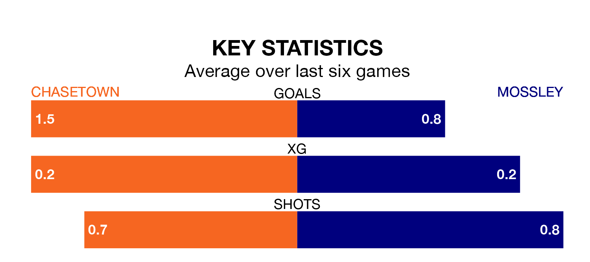

Mossley make the journey to the Scholars Ground to play Chasetown on Saturday looking to pick up points to end their five-game losing streak.
Mossley's struggles have left them with just three points from their last six Northern Premier League Division One – West matches, while their opponents have earned 10 from a possible 18.
With 43 goals in 36 games so far this season, Mossley are scoring at below the league average rate with 1.2 goals per game. And they are conceding more than average, letting in 54 goals at a rate of 1.5 per game.
Chasetown, meanwhile, are average scorers, with 1.4 goals per game. They have also conceded 1.4 goals per game.
The away side are 14th in the table after 36 games, of which they have won 12 and drawn eight, earning 44 points.
The hosts are three places ahead of Mossley in 11th, with 14 wins and eight draws putting them on 50 points.
Chasetown's last match was on April 13, a 1-0 win against Stalybridge Celtic.
Mossley lost 2-1 against Vauxhall Motors last time out, also on April 13.
Updated: 15:40 (UTC), 18/04/24